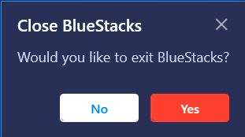
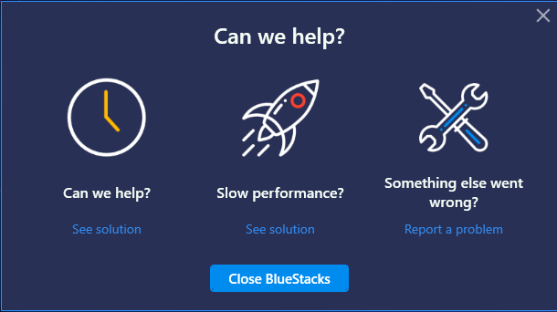

import logging import datetime import os, sys logging.basicConfig(filename=r"C:\Users\Administrator\Desktop\perf_rc_suite\Logs\Logs.txt",level=logging.DEBUG) logging.warning(str(datetime.datetime.now()) + " Couldn't find cross button") try: if exists(, 30): click(Pattern().targetOffset(36,1)) logging.info(str(datetime.datetime.now()) + " Quitting BlueStacks") print(str(datetime.datetime.now()) + " Quitting BlueStacks") else: logging.warning(str(datetime.datetime.now()) + " Couldn't find cross button") if exists(, 30): click(Pattern().targetOffset(87,50)) logging.info(str(datetime.datetime.now()) + " Quit BlueStacks") print("There") elif exists(, 30): click(Pattern().targetOffset(-1,132)) logging.info(str(datetime.datetime.now()) + " Quitting BlueStacks (OTS not completed popup)") else: logging.warning(str(datetime.datetime.now()) + " Couldn't quit") except Exception, e: logging.warning(str(datetime.datetime.now()) + " Couldnt quit Bluestacks; error - " + str(e)) sys.exit(0)